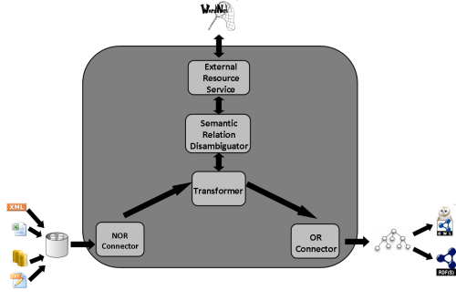

")
")
NOR2O
NOR2O is no longer used or maintained by our group.
NOR2O is a Library for Transforming Non-Ontological Resources to Ontologies. Non-Ontological Resources (NORs) are knowledge resources whose semantics have not been formalized yet by an ontology. There is a big amount of NORs that embody knowledge about some particular domains and that represent some degree of consensus.
Within the context of the NeOn Methodology, we propose a general method for re-engineering NORs into ontologies. The method is based on the so-called re-engineering patterns, which define a procedure that transforms the non-ontological resources components into ontology representational primitives using WordNet1 for disambiguating the implicit relations. Here we present the description of NOR2O, a Java library that implements the transformations suggested by the patterns.
A high level conceptual architecture diagram of the modules involved is shown in Fig. 1. The NOR Connector loads classification schemes, thesauri, and lexicons modelled with their corresponding data models, and implemented in databases, XML, flat files and spreadsheets.
The Transformer performs the transformation suggested by the patterns, by implementing the sequence of activities included in the patterns. This module interacts with the Semantic Relation Disambiguator module for obtaining the suggested semantic relations of the NOR elements.
The Semantic Relation Disambiguator is in charge of obtaining the semantic relation between two NOR elements. Basically, the module receives two NOR elements from the Transformer module and returns the semantic relation between them. The module connects the external resource through the External Resource Service module to get the relation.
The External Resource Service is in charge of interacting with externalresources for obtaining the semantic relations between two NOR elements. At this moment the module interacts with WordNet. We are implementing the access to DBpedia2.
The OR Connector generates the ontology in OWL-DL. To this end, this module is relying on the OWL API3.Finally, to conclude the description of the software library, it is worth to mention that the implementation of this library follows a modular approach, therefore it is possible to extend it to include other types of NORs, data models, and implementations in a simple way, as well as exploiting other external resources for relation disambiguation.

Fig. 1. Modules of the NOR2O software library.

Created under Creative Commons License - 2015 OEG.